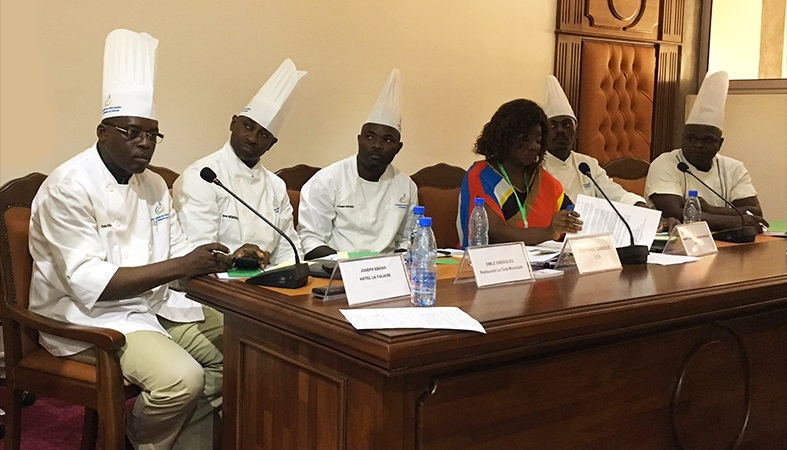

Chefs for Development initiative in Central Africa
Interview with Marie Joseph Medzeme Engama, Expert in value chains, working with producer organisations and executive chefs and restaurateurs.
Context
The Chefs for Development (Chefs4Dev) network was designed to increase smallholder access to tourism markets and promote healthier local food for all consumers. In addition to organizing field activities - including training for young chefs, culinary festivals and TV shows - Chefs4Dev also functions as an online community.
Marie Joseph Medzeme Engama was at the heart of the expansion of the initiative in Central Africa in December 2016, where she invited five local chefs participating in the launch day of the platform in Yaoundé, Cameroon, to offer more local dishes in the menus offered to their guests.

[Chefs4Dev] Does the tourism sector (hotels, restaurants, etc.) buy enough local products from producers and processors?
The Chefs for Development initiative is of great interest in Central Africa, where ties already exist between chefs, producers and stakeholders in the agricultural and agri-food sector. Some chefs already source their supplies from local producers who are known for the quality of their products and their regularity of supply. There are direct contracts between some hotels and restaurants and producer organisations for the supply of foodstuffs.
Nevertheless, the link between producers and chefs is weak compared to its potential. In most cases, there is no direct contact between chefs and producers, and as a result, hotels and restaurants often turn to imported produce or other service providers and suppliers. This is due to the fact that many chefs have difficulty finding local ingredients and guaranteeing a reliable supply and good quality of produce. Most large hotels and restaurants buy directly from urban and suburban markets or other suppliers.
Many challenges and constraints still stand in the way of closer relations between producers, especially small producers, and hotel managers. These are mainly issues of quality and supply. Indeed, to sell certain products in hotels, producers must provide their full ‘nutrition facts’, be able to demonstrate good food health standards, and provide expiry dates. These elements are important for local products to be accepted and adopted by hotel managers. In some hotels, it is the owners who decide on the menus that are served. This limits the ability and the freedom of chefs to offer menus based on local products and to obtain supplies from local producers or processors. It would therefore be necessary to set up a framework for consultations and exchanges between hotel managers, chefs and local producers. This would allow hotel managers to have proper information and be reassured about the quality of products and regularity of supply. Producers for their part would be informed of the hotel’s and their clients’ needs and requirements in terms of the quality and quantity of products. This would give chefs a wider range of decisions on the choice and preparation of the dishes to be served.
You work with chefs in Cameroon who are employed in prestigious hotels and who work hard to promote local produce and local cuisine, which is incredibly varied in your country. Can you share your experience with our readers?
It's a fascinating and captivating experience, because chefs are always working behind the scenes. When you go to hotels or restaurants, you are not always in contact with the chefs. It is therefore a privilege for me to work with the chefs of prestigious hotels and restaurants in Cameroon. Chefs are major players in the agri-food value chain. They play a decisive role in choosing the ingredients that will appear on the menus. They are in a unique position as cultural ambassadors, able to promote the tourism sector and help ensure greater market access for small producers, generating income and employment for rural communities.
Yet in spite of this great potential, we see many hotels and restaurants in Cameroon that tend to neglect African cuisine, and particularly Cameroonian cuisine. They serve western food to their guests. Barely 20% of the proposals made by chefs for local dishes are approved by the hotel owners, and yet we have great potential for promoting local products through local gastronomy.
We held awareness-raising meetings with chefs in major hotels and restaurants, and this led some to make commitments to promote local cuisine and put local products at the heart of their cuisine. This is now reflected in the use of local products on restaurant and hotel menus. Various actions have been taken to this end. This is the case, for example, for the Association of Chefs and Pastry Chefs in Cameroon, which was set up to promote cultural and culinary heritage with a view to raising the quality of local products. Chaired by Mr Émile Engoulou of the Club Municipal restaurant, the association is developing the concept of ‘returning to our roots’. At his own restaurant, 70% of the dishes on the menu are from Cameroon. There is also the example of the AZUR Hotel, which offers at least two Cameroonian dishes on the menu every day, as does the Hotel La Falaise in Yaounde. The Hilton and Mont Febe hotels include typical Cameroonian dishes on their menus every day. Since the launch of the Chefs for Development initiative in Yaoundé, Cameroon, in 2016, chefs have mobilised within their association to reverse the trend, promoting local dishes on their menus and forging partnerships with organisations of producers and processors. Now, some hotels and restaurants are slowly beginning to establish formal relationships with a few producer organisations for the regular supply of hotels and restaurants with food products.
If we are to make the most of the strong culinary potential of Cameroon and Central Africa in general, to take advantage of the many foreign visitors and tourists who stay in our hotels, we need to work hard to raise awareness and build the capacity of stakeholders, and especially to develop the Chefs for Development initiative in Cameroon and Central Africa.
What are your recommendations to build up the relations between chefs and the main stakeholders in the value chain, in order to increase the supply of hotels and restaurants from local producers and processors?
Chefs have a key role to play in the choice of ingredients that go onto their menus. This is why it is important to strengthen the connections between chefs and producers, not only in order to promote local products on the menus, but also to facilitate market access for agricultural products.
To strengthen the ties between the chefs and the stakeholders in the value chain, we recommend the following:
- Raise awareness among, and train chefs and hotel managers, on the importance of promoting local agricultural products. This training will make chefs more willing to experiment with local products and to incorporate them in their menus.
- Strengthen the ties between chefs and small producers through the creation of a framework for consultation and exchanges between chefs, restaurant and hotel managers, and producers.
- Ensure the association of chefs has a map of quality producers with whom to work over the long-term, and develop partnership contracts with them.
- Carry out market research including detailed analysis of the needs of consumers in hotels and restaurants.
- Carry out a feasibility study on the establishment of traceability systems for certain products.
- Carry out communication and marketing activities for the promotion of local gastronomy.
Find out more:
Chefs for Development comes to Central Africa
http://bit.ly/2fSJDHG